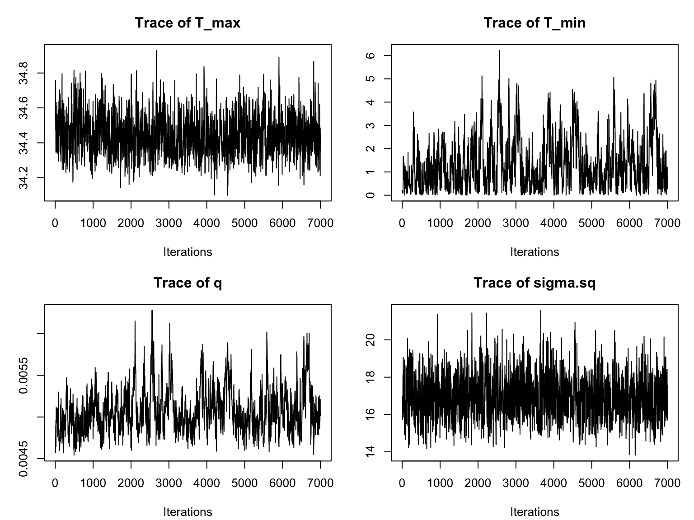
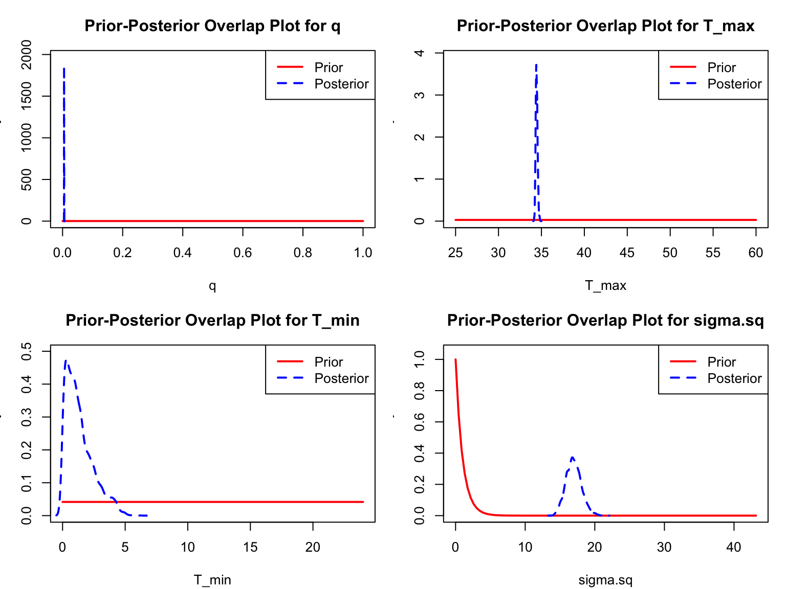
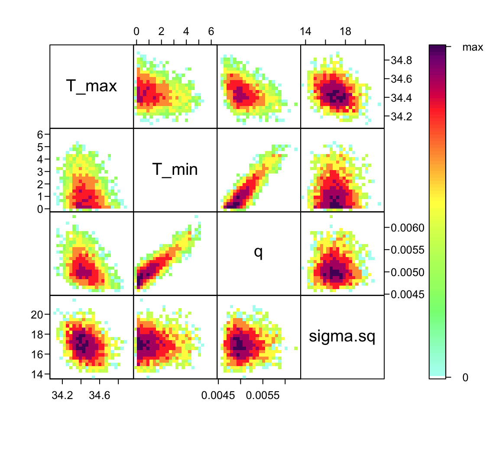
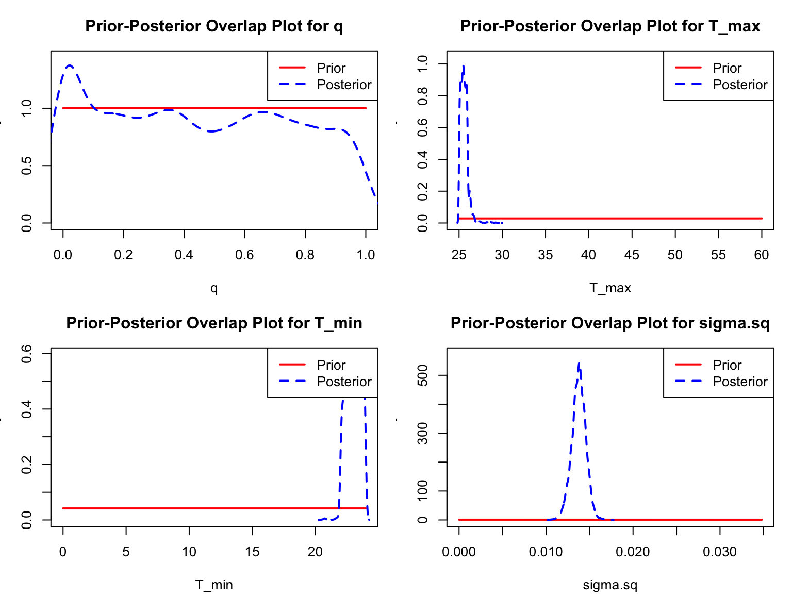
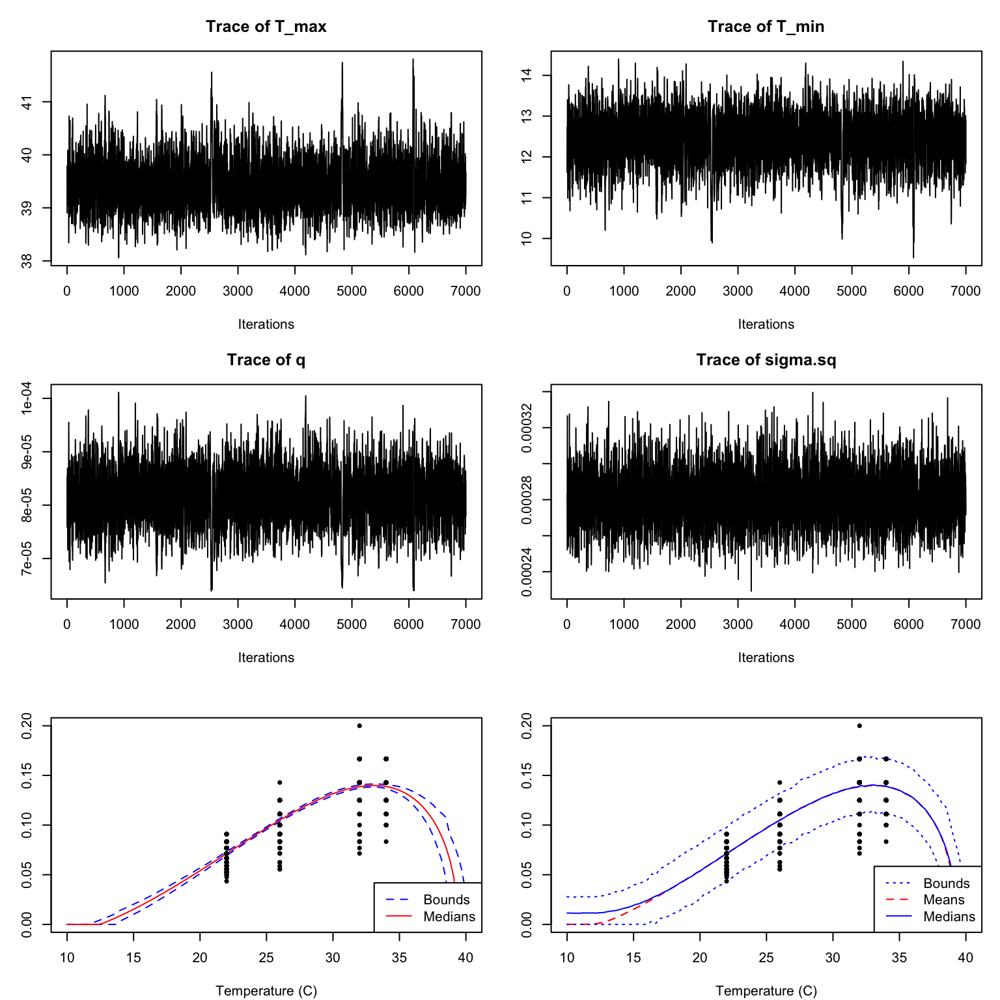
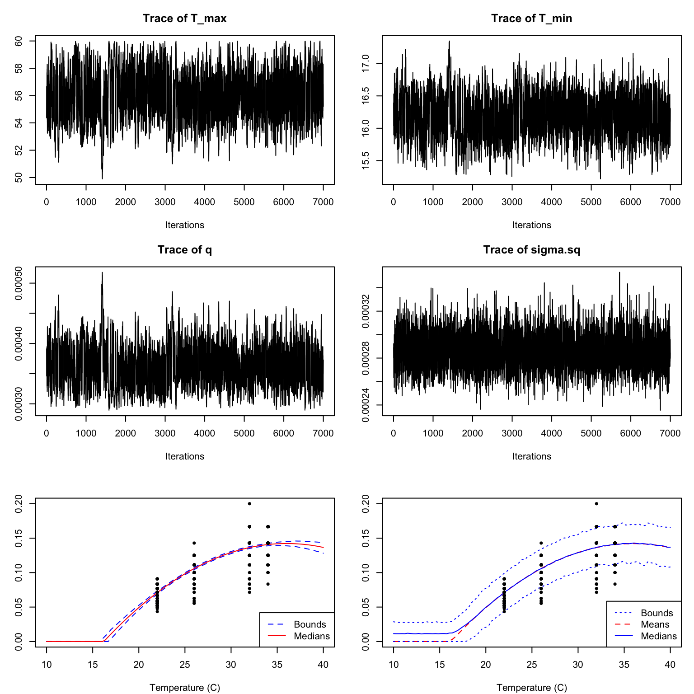

# Load libraries
library(nimble)
library(HDInterval)
library(MCMCvis)
library(coda) # makes diagnostic plots
library(matrixStats)
library(truncnorm)Introduction to Bayesian Methods
Activity 2B: Fitting TPCs using bayesTPC
Introduction
This section is focused on using the bayesTPC package to fit TPCs to data using the methods we’ve explored in the Bayesian lectures and the first two activities. Here we won’t be talking much about the implementation, but instead will rely on the bayesTPC package and it’s functions to allow us to specify, fit, and analyze the data.
Packages and tools
For this practical you will need to first install nimble, then be sure to install the following packages:
We are also introducing our new, in development, package bayesTPC. It is currently available through github.
#install.packages("devtools")
#devtools::install_github("johnwilliamsmithjr/bayesTPC")
library(bayesTPC)Fitting thermal trait data for Aedes mosquitoes
We demonstrate the basic workflow of bayesTPC by fitting TPC curves to Aedes aegypti trait data from @huxley2022competition. We use individual level data on three traits:
- juvenile survival (proportions – number of juveniles that become adults/total number of eggs)
- development rate (1/time for a mosquito to develop)
- adult longevity.
Note that some of the traits/data are related to others, such as mortatlity rate $=$1/lifespan or development rate = 1/development time if we’re assuming lifespan and development time, respectively, are exponentially distributed – a common modeling assumption.
These three trait sets allow us to explore a full range of models and functionality in bayesTPC.
Data from VecTraits
The data we want to fit is available on the VecTraits database. We can use the helper function included as part of bayesTPC that isdesigned to interact with this database, get_datasets(), along with the appropriate data set id numbers to retrieve and load them into R.
aedes_data <- get_datasets(577:579)We have downloaded all three datasets. As always, first we have a look at the data (just looking at a few columns, since the VecTraits format is large so it can hold a lot of different types of information):
cols<-c(2,5,6,9,68)
aedes1<-aedes_data[[3]]
head(aedes1[,cols]) DatasetID OriginalTraitName OriginalTraitDef
1 579 longevity individual-level duration of life stage
2 579 longevity individual-level duration of life stage
3 579 longevity individual-level duration of life stage
4 579 longevity individual-level duration of life stage
5 579 longevity individual-level duration of life stage
6 579 longevity individual-level duration of life stage
OriginalTraitValue Interactor1Temp
1 10 22
2 9 22
3 7 22
4 11 22
5 10 22
6 6 22Trait data need to be in a particular format before being passed into the fitting routine. Specifically, the data must be stored as a list with names Trait for the modeled response and Temp for the corresponding temperature settings (in ^\circC, as this is necessary for some of the TPC functions). We format the three datasets here:
# development rate
dev_rate <- list(Trait = 1/aedes_data[[2]]$OriginalTraitValue,
Temp = aedes_data[[2]]$Interactor1Temp)
# adult longevity
adult_life <- list(Trait = aedes_data[[3]]$OriginalTraitValue,
Temp = aedes_data[[3]]$Interactor1Temp)
# juvenile survival data
juv_survival <- list(Trait = aedes_data[[1]]$OriginalTraitValue,
Temp = aedes_data[[1]]$Interactor1Temp)Notice that we follow a convention here treating the development rate as 1/development time. This is a common assumption (although it is formally only valid if we believe that development times are exponentially distributed). Often mathematical models assume exponentially distributed traits, and so this is why the data are modeled in this fashion. We will show this approach here, as it is common, but do not advocate for this in general.
We will first go through a case where the default settings give reasonable output out of the box (adult lifespan) in order to show basic functions in action. We then approach a case where the defaults need to be modified (development rate). As part of your independent practice, you can fit data (juvenile survival) where we would use a glm model for the data.
Thermal performance curve models in bayesTPC
There are many functional forms that can be used to describe TPCs. Two of the more common (and easy to fit) functions are quadratic and Briere. Traits that respond unimodally but symmetrically to temperature (often the case for compound traits) can be fit with a quadratic function: f_1(T) = \begin{cases} 0 &\text {if } T \leq T_0 \\ -q (T-T_0) (T-T_m) & \text {if } T_0 < T <T_m \\ 0 &\text{if } T \geq T_m . \end{cases}
Traits that respond unimodally but asymetrically can be fitted with a Briere function: f_2(T) = \begin{cases} 0 &\text {if } T \leq T_0 \\ q T (T-T_0) \sqrt{T_m-T} & \text {if } T_0 < T <T_m \\ 0 &\text{if } T \geq T_m . \end{cases} In both models, T_0 is the lower thermal limit, T_m is the upper thermal limit (i.e., where the trait value goes to zero on either end), and q>0 determines the curvature, and so with the other parameters determines the height of the curve (i.e., value of the trait at the optimum temperature). Note that above we’re assuming that the quadratic must be concave down (hence the negative sign), and that the performance goes to zero outside of the thermal limits. In some cases we instead use a concave-up quadratic, although it must be parameterized differently.
We include eight common TPC models (listed with get_models()) in the package (Table 1). Users can obtain the default specification and priors for these models with get_default_model_specification(). The package also includes linear and quadratic formulations for Bernoulli, binomial, and Poisson GLMs, assuming canonical link functions .
bayesTPC.
For example, if you want to see all of the TPCs you run:
get_models() [1] "poisson_glm_lin" "poisson_glm_quad" "binomial_glm_lin"
[4] "binomial_glm_quad" "bernoulli_glm_lin" "bernoulli_glm_quad"
[7] "briere" "gaussian" "kamykowski"
[10] "pawar_shsch" "quadratic" "ratkowsky"
[13] "stinner" "weibull" We can view the form of the implemented TPC using the get_formula function:
get_formula("briere")expression(q * Temp * (Temp - T_min) * sqrt((T_max > Temp) *
abs(T_max - Temp)) * (T_max > Temp) * (Temp > T_min))Currently, the default likelihood for all TPCs a normal distribution with a lower truncation at zero, and where the mean of the normal distribution is set to be the TPC (here a quadratic). The last piece of the Bayesian puzzle is the prior. You can see the default parameter names and their default priors using “get_default_priors”:
get_default_priors("briere") q T_max T_min
"dunif(0, 1)" "dunif(25, 60)" "dunif(0, 24)" As you can see, for the quadratic function, the default priors are specified via uniform distributions (the two arguments specific the lower and upper bounds, respectively). For the quadratic (and the Briere), the curvature parameter must be positive, and the priors need to be specified to ensure that T_{min}<T_{max}. Note that if you want to set a prior to a normal distribution, unlike in R and most other programs, in nimble (and thus bayesTPC) the inverse of the variance of the normal distribution is used, denoted by \tau = \frac{1}{\sigma^2}.
Fitting using bayesTPC
The workhorse of the bayesTPC package is the b_TPC function which requires two user-specified inputs. The first is data; a list with expected entries named “Trait” corresponding to the trait being modeled by the TPC and “Temp” corresponding to the temperature in Celsius that the trait was measured at (as described above). The second input is model, which is a string specifying the model name or a btpc_model object. If a string is provided, the default model specification is used.
Example 1: Adult Mosquito Lifespan
Let’s first explore the basic functionality of bayesTPC through an example on adult mosquito lifespan (the VecTraits dataset 579 downloaded above). We already formatted the dataset appropriately above for the b_TPC() function:
data.frame(adult_life)[1:5,] Trait Temp
1 10 22
2 9 22
3 7 22
4 11 22
5 10 22Inference with default settings
Once we have the data formatted as required by b_TPC(), we can fit each of the datasets with a single call, using the default settings. As we saw in the plot above, adult lifespan are numeric data where a concave down unimodal response is likely appropriate. For adult lifespan, we chose to fit a Briere function with the default specification:
get_default_model_specification("briere")bayesTPC Model Specification of Type:
briere
Model Formula:
m[i] <- ( q * Temp * (Temp - T_min) * sqrt((T_max > Temp) * abs(T_max - Temp))
* (T_max > Temp) * (Temp > T_min) )
Model Distribution:
Trait[i] ~ T(dnorm(mean = m[i], tau = 1/sigma.sq), 0, )
Model Parameters and Priors:
q ~ dunif(0, 1)
T_max ~ dunif(25, 60)
T_min ~ dunif(0, 24)
Prior for Variance:
sigma.sq ~ dexp(1)To fit the model then requires a single line of code with the first argument being the name of the formatted data object and the second being the name of the TPC that we want to use for fitting. By default we take 10000 samples, no burn-in, using a random walk sampler.
adult_life_fit <- b_TPC(adult_life, "briere")Once the fitting process has completed (which can take a few minutes), we can have a gander at the fitted model object using print. This command provides details about the model fit, the priors, and some simple summaries of the fitted model.
print(adult_life_fit)bayesTPC MCMC of Type:
briere
Formula:
m[i] <- ( q * Temp * (Temp - T_min) * sqrt((T_max > Temp) * abs(T_max - Temp))
* (T_max > Temp) * (Temp > T_min) )
Distribution:
Trait[i] ~ T(dnorm(mean = m[i], tau = 1/sigma.sq), 0, )
Parameters:
MAP Mean Median Priors
T_max 34.465 28.764 27.509 dunif(25, 60)
T_min 0.035 10.882 12.537 dunif(0, 24)
q 0.005 0.029 0.017 dunif(0, 1)
sigma.sq 16.672 34.742 38.450 dexp(1)We can also see what is in the object:
names(adult_life_fit)[1] "samples" "mcmc" "data" "model_spec"
[5] "priors" "constants" "uncomp_model" "comp_model"
[9] "MAP_parameters"Most of what we do relies on the “samples” portion of the object, although bayesTPC has helper functions to reduce the need to interact with these directly in most cases.
MCMC Diagnotic Plots
b_TPC() returns an object of class btpc_MCMC which contains (along with model specification information and data) the MCMC samples as an mcmc object from the package coda. As mentioned in the previous portion of the training, it is important to check the MCMC traceplot before using or interpreting a fitted model to ensure the chains have converged. An MCMC traceplot shows each sample for a parameter in the order that the samples were taken. If the model has converged, the traceplot will eventually start varying around a single point, resembling a “fuzzy caterpillar”.
par(mfrow=c(2,2), mar=c(4,3,3,1)+.1)
traceplot(adult_life_fit)
We notice that it takes a while for the chains to converge. Thus we need to specify a burn-in period and only consider samples obtained after the burn-in. For this example, a burn-in of around 3000 should give us a good result. We can re-visualize with this burn-in (by adding burn=3000 as an argument to traceplot):
par(mfrow=c(2,2), mar=c(4,3,3,1)+.1)
myburn<-3000
traceplot(adult_life_fit, burn=myburn)

This is much better! All of the chains now have the desired “fuzzy caterpillar” look. Typically one would at this point go back to the original fitting function, and specify the burn-in time, along with potentially increasing the total sample size in order to ensure sufficient samples. This approach drops the burnin samples from the returned object. For brevity herewe will simply specify the value of burn as an argument for the remaining plotting functions.
We can examine the ACF of the chains as well (one for each parameter), similarly to a time series, to again check for autocorrelation within the chain (we want the autocorrelation to be fairly low):
s1<-as.data.frame(adult_life_fit$samples[myburn:10000,])
par(mfrow=c(2,2), bty="n", mar=c(4,4,3,1)+.1)
for(i in 1:4) {
acf(s1[,i], lag.max=50, main="",
ylab = paste("ACF: ", names(s1)[i], sep=""))
}There is still autocorrelation, especially for two of the quadratic parameters. The chain for \sigma is mixing best (the ACF falls off the most quickly). We could reduce the autocorrelation even further by thinning the chain (i.e., change the nt parameter to 5 or 10), or changing the type of sampler.
A second important diagnostic step is to compare the marginal priors and posteriors of our model parameters. This enables us to confirm that (unless we’ve purposefully specified an informative prior) that our posterior distributions have been informed by the data. bayesTPC includes a built in function, ppo_plot(), that creates posterior/prior overlap plots for all model parameters (note that the priors are smoothed because the algorithm uses kernel smoothing instead of the exact distribution).
par(mfrow=c(2,2), mar=c(4,3,3,1)+.1)
ppo_plot(adult_life_fit, burn=myburn, legend_position = "topright")

burn argument.
The prior distribution here is very different from the posterior. These data are highly informative for the parameters of interest and are very unlikely to be influenced much by the prior distribution (although you can always change the priors to check this). However, notice that the posterior T_0 is slightly truncated by their priors. If priors and posteriors are very similar one should shift the priors, and re-run.
Additional plotting
After we have established appropriate burn-in values, we can use plot(), posterior_predictive(), and plot_prediction() to examine the fit of the model in two ways. The defaults for the plot() function plots the median and 95% Highest Posterior Density (HPD) interval of the fitted function (i.e., plugging the samples into the TPC function, and calculating the median and HPD interval at all evaluated temperatures). In contrast, the posterior_predictive() function uses simulation to draw points from the posterior predictive distribution, and so it includes both the samples describing the TPC function and the observational model. It then uses these samples to calculate the mean/median and the HPD interval of those simulated points. Both kinds of plots are shown in Figure 5 for comparison.

plot() function (LEFT) and the combination of the posterior_predictive(), and plot_prediction() functions (RIGHT). By default both functions would only make plots/predictions within the range of temperatures included in the fitted data. However here we show the use of the temp_interval argument to enable plotting of predictions across a broader temperature range.
Note that the two bottom fits show different output. On the left we show the HPD bounds and median of the fitted Briere function, only. On the right, in contrast, shows the bounds and mean/median of the posterior predictive distribution (so it includes the randomness that is part of the truncated normal observation model). Notice that the HPD predictive interval is a bit jagged here. These intervals are generated using sampling from the posterior predictive distribution. Increasing the total number of samples can give smoother bounds in general.
Now that we’ve confirmed that things are working well, it’s often useful to also look at the joint distribution of all of your parameters together to understand how estimates are related to each other. Of course, if you have a high dimensional posterior, rendering a 2-D representation can be difficult. The standard is to examine the pair-wise posterior distribution. We can do this using the function bayesTPC_ipairs():
bayesTPC_ipairs(adult_life_fit, burn=myburn)

burn argument.
Notice that there is substantial correlation between q and T_{min} (a.k.a., T_0). This is typical for most TPCs, and is one of the reasons why prior choice can be very important!
Summaries
If we are satisfied with the traceplots, fits, and prior/posterior plots, users may want to examine additional summary output (for example to make tables) or to save summaries. Numerical summaries are available through the print() function shown above, but we can see more details using summary().
summary(adult_life_fit, burn=myburn)bayesTPC MCMC of Type:
briere
Formula:
m[i] <- ( q * Temp * (Temp - T_min) * sqrt((T_max > Temp) * abs(T_max - Temp))
* (T_max > Temp) * (Temp > T_min) )
Distribution:
Trait[i] ~ T(dnorm(mean = m[i], tau = 1/sigma.sq), 0, )
Priors:
q ~ dunif(0, 1)
T_max ~ dunif(25, 60)
T_min ~ dunif(0, 24)
sigma.sq ~ dexp(1)
Max. A Post. Parameters:
T_max T_min q sigma.sq log_prob
34.4652 0.0350 0.0048 16.6718 -1925.8788
MCMC Results:
Iterations = 1:10000
Thinning interval = 1
Number of chains = 1
Sample size per chain = 10000
1. Empirical mean and standard deviation for each variable,
plus standard error of the mean:
Mean SD Naive SE Time-series SE
T_max 28.76360 2.9406 0.029406 1.654002
T_min 10.88169 6.9010 0.069010 2.372677
q 0.02861 0.0392 0.000392 0.006959
sigma.sq 34.74219 9.2907 0.092907 3.296142
2. Quantiles for each variable:
2.5% 25% 50% 75% 97.5%
T_max 26.155854 26.800453 27.50899 28.82192 34.5667
T_min 0.229460 3.649167 12.53726 17.13245 20.5203
q 0.004798 0.007817 0.01668 0.03479 0.1243
sigma.sq 15.776652 35.975053 38.44992 40.43169 43.6787We may want to store some of the sample statistics for later use. The sample-based Maximum a posteriori (MAP) estimator is calculated and saved as part of our fitting process, and can be obtained directly from the fit object.
# MAP estimator
adult_life_fit$MAP_parameters |> round(5) T_max T_min q sigma.sq log_prob
34.46524 0.03496 0.00478 16.67180 -1925.87878 The other sample statistics for each parameter can be obtained by saving the summary of the samples in the fitted model object. Then the various statistics may be extracted directly:
estimates <- summary(adult_life_fit$samples)
# Mean
estimates$statistics[,"Mean"] T_max T_min q sigma.sq
28.76360399 10.88169080 0.02861184 34.74219459 # Median and 95% CI bounds
estimates$quantiles[,c("2.5%", "50%", "97.5%")] 2.5% 50% 97.5%
T_max 26.155853717 27.50898620 34.5666961
T_min 0.229460133 12.53725788 20.5203034
q 0.004798289 0.01667521 0.1243185
sigma.sq 15.776651741 38.44992386 43.6787004If one instead would like the Highest Posterior Density bounds (instead of the quantile based summaries) the HPDinterval function from coda may be used.
HPDinterval(adult_life_fit$samples) lower upper
T_max 26.154094855 34.5616431
T_min 0.258472850 20.5338334
q 0.004628949 0.1088912
sigma.sq 15.728537710 43.5531210
attr(,"Probability")
[1] 0.95Example 2: Juvenile Development Rate
We will use a second example to explore simple modifications that can be made to the baseline fitting routines, especially changing of priors and modification of the default sampler.
Fitting with default settings
The default priors chosen in bayesTPC are generally as non-restrictive as possible, which can lead to inappropriate fits when the response trait is very close to zero. In this case it may be necessary to modify the priors. It is also possible that mixing may be poor with the default sampler, and so we may need to update the sampling method. We briefly show these issues using the development rate data as an example. These data are also numeric and we assume, again, a Briere functional response:
dev_rate_fit <- b_TPC(dev_rate, "briere")However in this case, although the traceplots look ok (after a burnin) the fits are very poor (Figure 7)
We can see a bit of what is going on by looking at the marginal prior/posterior plots:
par(mfrow=c(2,2), mar=c(4,3,3,1)+.1)
ppo_plot(dev_rate_fit, burn=myburn, legend_position = "topright")

burn argument.
Here the posterior for q is effectively the same as the prior, and both T_{min} and T_{max} are bumping up against the edges of their ranges.
Changing Fitting arguments
In order to try to improve the fitting, we will modify the priors and the sampler. We notice from the plot of the data that the rate seems to increase across the observed range of the data. Thus it is likely that the T_{\mathrm{max}} parameter is at or above the temperature manipulated in the experiment and T_{\mathrm{min}} is below. We can pass this information in as new priors through the priors argument as shown. Further, we can switch to a sampler that has a better chance of converging by modifying the samplerType parameter. Here, we use automated factor slice sampling. Although this sampler is often more effective (especially when parameters are highly correlated, as they are for most TPCs), it is slower and so is not used by default. These changes result in much better fits (see Figure 9).
dev_rate_fit2 <- b_TPC(dev_rate, "briere",
priors = list(T_min = "dunif(0,22)",
T_max = "dunif(34,50)"),
burn=myburn,
samplerType = "AF_slice")

This is much better! The chains mix well, and our predictions now lie along with the data. If you were to plot the autocorrelation you would notice that it falls off much more quickly.
Model Selection
What if we didn’t know that the Briere was the preferred model for these development rate data? We can fit with another function, check all of the diagnostics, and then compare via WAIC (Widely Applicable Information Criterion) to choose between them. For the juvenile development rate, let’s try a quadratic. Let’s look at the implementation details:
get_formula("quadratic")expression(-1 * q * (Temp - T_min) * (Temp - T_max) * (T_max >
Temp) * (Temp > T_min))get_default_priors("quadratic") q T_max T_min
"dunif(0, 1)" "dunif(25, 60)" "dunif(0, 24)" I will refit using the default priors, except for the prior for q (so you can see an option):
dev_rate_fit_Quad <- b_TPC(data = dev_rate, ## data
model = 'quadratic', ## model to fit
niter = 10000, ## total iterations
burn = 3000, ## number of burn in samples
samplerType = 'AF_slice', ## slice sampler
priors = list(q = 'dexp(1)') ## priors
) Creating NIMBLE model:
- Configuring model.
- Compiling model.
Creating MCMC:
- Configuring MCMC.
- Compiling MCMC.
- Running MCMC.
Progress:
|-------------|-------------|-------------|-------------|
|-------------------------------------------------------|
Configuring Output:
- Finding Max. a Post. parameters.summary(dev_rate_fit_Quad)bayesTPC MCMC of Type:
quadratic
Formula:
m[i] <- ( -1 * q * (Temp - T_min) * (Temp - T_max) * (T_max > Temp) * (Temp >
T_min) )
Distribution:
Trait[i] ~ T(dnorm(mean = m[i], tau = 1/sigma.sq), 0, )
Priors:
q ~ dexp(1)
T_max ~ dunif(25, 60)
T_min ~ dunif(0, 24)
sigma.sq ~ dexp(1)
Max. A Post. Parameters:
T_max T_min q sigma.sq log_prob
27.2762 23.4034 0.0102 0.0128 985.5949
MCMC Results:
Iterations = 1:7000
Thinning interval = 1
Number of chains = 1
Sample size per chain = 7000
1. Empirical mean and standard deviation for each variable,
plus standard error of the mean:
Mean SD Naive SE Time-series SE
T_max 25.80008 0.5127068 6.128e-03 0.05132
T_min 23.02759 0.5877694 7.025e-03 0.01959
q 0.69929 0.9417656 1.126e-02 0.04569
sigma.sq 0.01349 0.0009306 1.112e-05 0.00003
2. Quantiles for each variable:
2.5% 25% 50% 75% 97.5%
T_max 25.037709 25.39160 25.80821 26.07444 27.29098
T_min 22.044379 22.51433 23.04794 23.54120 23.95935
q 0.008079 0.08584 0.33621 0.94822 3.31108
sigma.sq 0.011661 0.01286 0.01351 0.01413 0.01528We again plot the chains of the three main TPC parameters and the standard deviation of the normal observation model:

Once fitted, we want to be able to choose which of these models is best for these data. Although, a priori we would expect the Briere fit to be best development rates, both fits seem visually reasonable. We can extract the the values of the wAIC [@watanabe2009algebraic] to compare the performance of our models using get_WAIC() (which wraps nimble’s getWAIC() function and produces a tidier format). The preferred model will be the one with the lowest wAIC value. Note that because this is based on samples, you want to have the same number of samples in the chains for each of the models you are comparing.
bayesTPC::get_WAIC(dev_rate_fit2) WAIC lppd pWAIC
-3731.667316 1870.386243 4.552585 bayesTPC::get_WAIC(dev_rate_fit_Quad) WAIC lppd pWAIC
-1979.3795635 990.0311345 0.3413528 In this case the WAIC for the Briere fit is more negative and so is the preferred model.
Independent Practice
Practice Option 1
For the Aedes aegypti life span data, try to fit 3 TPC functional forms (Briere, quadratic, and Stinner) to the data. Use slice sampling for all three of them, and make the chains a bit longer (say 15000 plus the 3000 burnin). Check all of the diagnostics for all models, and plot the fits. Then compare the three models via WAIC. Which one comes out on top.
Practice Option 2
You can download some other trait data from the VectorByte – VecTraits Databases or use your own data. Write you own analysis as an independent, self-sufficient R script that produces all the plots in a reproducible workflow when sourced. Use the appropriate functional forms for your data.
Practice Option 3
In addition to the two datasets that we explored here, we downloaded data on juvenile survival. These data are encoded as zeros and ones, and are more appropriately modeled using a Bernoulli/Binomial distribution – that is as GLMs. bayesTPC has implemented two options for fitting these models, either a linear or quadratic:
## Linear:
get_default_model_specification("bernoulli_glm_lin")bayesTPC Model Specification of Type:
bernoulli_glm_lin
Model Formula:
logit(m[i]) <- ( B0 + B1 * Temp )
Model Distribution:
Trait[i] ~ dbern(m[i])
Model Parameters and Priors:
B0 ~ dnorm(0, 500)
B1 ~ dnorm(0, 500)## Quadratic:
get_default_model_specification("bernoulli_glm_quad")bayesTPC Model Specification of Type:
bernoulli_glm_quad
Model Formula:
logit(m[i]) <- ( B0 + B1 * Temp + B2 * (Temp)^2 )
Model Distribution:
Trait[i] ~ dbern(m[i])
Model Parameters and Priors:
B0 ~ dnorm(0, 500)
B1 ~ dnorm(0, 500)
B2 ~ dnorm(0, 500)Fit the juvenile survival data using both of these models. Note that the slice sampler is typically better for these, and you will likely need a longer chain and more burn-in. Make sure to use the same number of samples/burn-in for both models. Check all the diagnostic plots and plot the data with the fits. Then use WAIC to choose between the two model variants. What do you conclude?